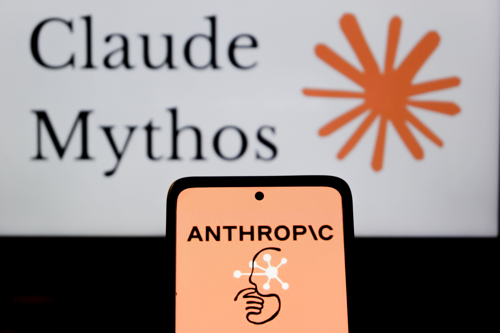

Компания Anthropic 2 октября объявила о запуске Claude Frontier Academy — первой в своём роде учебной программы от ИИ-компании, рассчитанной на инженеров её клиентов и партнёров. Заявка амбициозная: обучить 10 000 так называемых Frontier Deployed Engineers (FDE) к концу 2027 года, вложив $100 млн. Первые потоки уже стартовали в Сан-Франциско, Нью-Йорке и Лондоне.
Программа строится по образцу ординатуры: врачи учатся у практикующих специалистов на реальных случаях и держат экзамен перед самостоятельной практикой — и здесь — ровно так же. Инженер проходит многодневный очный интенсив с сотрудниками Anthropic, отрабатывает симуляцию корпоративного внедрения (от выбора кейса до security review и передачи в эксплуатацию), затем 12-недельную резидентуру с реальным проектом Claude в своей компании. На выходе — значки Claude Resident Engineer и Claude Frontier Deployed Engineer, первые вручат в начале 2027 года.
Учат не всех желающих, а по номинации от организации: каждый инженер приходит с названным проектом на Claude, который потом поведёт дома. В первых потоках — инженеры Accenture, Bain, Capgemini, Deloitte, McKinsey, Morgan Stanley, Novo Nordisk и Commonwealth Bank of Australia. По словам Стива Корфилда, главы партнёрского направления Anthropic, узкая группа глубоко квалифицированных людей даёт непропорционально большую долю эффекта от ИИ в бизнесе — и именно такую глубину талантов пока никто не выращивал внутри клиентов.
Отрасль спорит о том, что дороже — вычисления или люди, и Anthropic делает ставку на людей: $100 млн в подготовку кадров — это признание, что главный барьер внедрения ИИ в энтерпрайзе — не качество моделей, а дефицит инженеров, способных превратить идею в работающую систему. Проще говоря, компания продаёт не только Claude, но и людей, которые умеют его внедрять, — и привязывает к себе консультантов и корпорации ещё крепче.